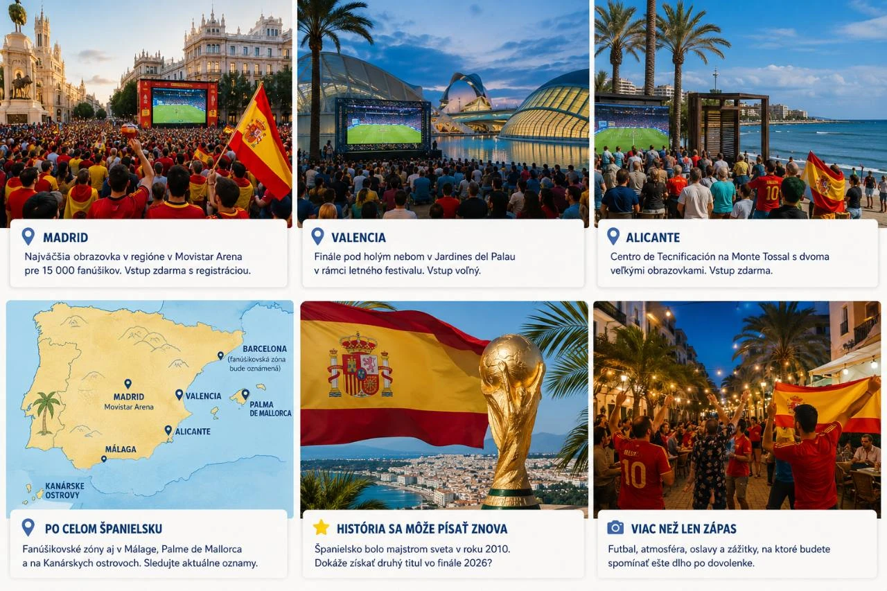
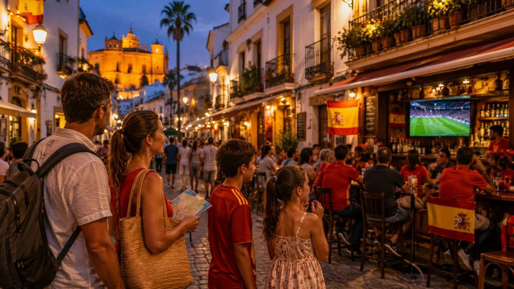

Španielsko zdolalo vo semifinále Francúzsko 2:0 a po šestnástich rokoch si zahrá druhé finále majstrovstiev sveta vo svojej histórii. O titul bude hrať v nedeľu 19. júla 2026 o 21:00 v pevninskom Španielsku aj na Slovensku. Na Kanárskych ostrovoch sa zápas začína o 20:00 miestneho času. Súperom bude víťaz semifinále Anglicko – Argentína.
Finále sa odohrá v New York New Jersey Stadium v East Rutherforde. V samotnom Španielsku však môže mať atmosféru veľkého domáceho štadióna: od Madridu cez Valenciu a Alicante až po bary pri pobreží Costa Blanca, Costa del Sol, Mallorky či Kanárskych ostrovov.
Rýchla odpoveď: oplatí sa turistovi vyhľadať futbalovú atmosféru?
Áno. Aj človek, ktorý futbal bežne nesleduje, môže spoločným sledovaním finále zažiť nevšedný pohľad na súčasné Španielsko. Najsilnejší zážitok ponúkne oficiálna fanúšikovská zóna. Pokojnejšou alternatívou je hotelová terasa, menší bar alebo reštaurácia mimo hlavného námestia.
Kto túži po tichom večeri, mal by sa naopak vyhnúť okoliu veľkých obrazoviek a hlavným centrám miest približne od 19:00 až do polnoci. Pri víťazstve môže byť návrat do hotela pomalší aj kvôli davu, doprave a spontánnym oslavám.
Kde sledovať finále: čo je známe a čo ešte treba overiť
Madrid: veľká fanúšikovská akcia
Najkonkrétnejší veľký program sa podľa aktuálne zverejnených informácií chystá v Movistar Arene. Počíta sa s veľkou obrazovkou, bezplatným vstupom s registráciou a kapacitou približne 15 000 ľudí; brány majú otvoriť pred zápasom. Pre turistu je to pravdepodobne najistejší spôsob, ako finále zažiť vo veľkom dave, ale bezplatné vstupenky sa môžu rýchlo minúť.
Počas predchádzajúcich zápasov sa fanúšikovia stretávali aj na Plaza de Colón a pri Puente del Rey v Madrid Río. Zatiaľ však nie je potvrdené, či budú popri Movistar Arene fungovať aj všetky doterajšie madridské zóny.
Valencia: futbal a letný večer pri parku
Vo Valencii sa podľa programu pripravuje premietanie v Jardines del Palau pri Palau de la Música na Passeig de l'Albereda. Má byť súčasťou letného festivalového programu Gran Fira de València a vstup má zostať bezplatný. Pre turistov je to príjemná kombinácia futbalu, parkov, promenád a večernej atmosféry mesta pri mori.
Po skončení zápasu treba počítať s väčším náporom na autobusy, taxi a dopravu v okolí Palau de la Música. Presné uzávery alebo posilnenie dopravy je rozumné skontrolovať až v deň zápasu.
Alicante: praktická voľba pri Costa Blanca
Alicante už počas turnaja pripravilo v Centro de Tecnificación na Monte Tossal dve veľké obrazovky a videopanely. Mestský program bol koncipovaný aj pre možné pokračovanie španielskej reprezentácie až do finále. Vstup býva bezplatný a areál sa pri predchádzajúcich zápasoch otváral približne hodinu pred výkopom; konkrétny režim finále si však overte priamo u mesta.
Pre dovolenkárov na Costa Blanca je to dobrá alternatíva k preplnenému športovému baru. V Alicante, Benidorme, Torrevieji a ďalších letoviskách sa dajú očakávať projekcie v hoteloch, reštauráciách a podnikoch pri promenádach. Pri obľúbenom bare sa oplatí vopred opýtať na rezerváciu stola.
Barcelona: verejné premietanie áno, miesto sa ešte môže zmeniť
Barcelona dopredu oznámila prípravu verejného premietania finále bez ohľadu na to, ktoré krajiny sa doň dostanú. Mesto očakáva približne 3 000 až 6 000 návštevníkov, presnú lokalitu však v čase vzniku článku ešte oficiálne neoznámilo. Pri podobných udalostiach sa využívali veľké centrálne priestory, no konkrétne miesto netreba hádať: sledujte mestské oznámenia a program širšieho pobrežného okolia.
Ďalšie mestá a letoviská
Veľké obrazovky fungovali počas semifinále aj v Málage, Palme de Mallorca, na Costa del Sol a na Kanárskych ostrovoch. Vo Villene sa pri veľkom záujme pripravovalo presunutie akcie na väčšie námestie; v Sagunte sa uvažovalo s viacerými lokalitami. Pri týchto miestach však treba čakať na finálové potvrdenie samosprávy alebo konkrétneho podniku.

Pre Slovákov: ako spojiť finále s krátkym pobytom pri mori
Cestovať do Španielska iba kvôli jednému zápasu sa oplatí najmä vtedy, keď si z finále urobíte súčasť krátkeho mestského alebo plážového pobytu. Keďže sa hrá v nedeľu večer, najpraktickejší je odlet v piatok alebo v sobotu a návrat v pondelok či v utorok. Netreba potom riešiť stresný presun na letisko priamo po záverečnom hvizde.
Najlepšie kombinácie mesto + more
- Valencia: dobrý kompromis medzi mestom, plážou a oficiálnou večernou atmosférou. Na jeden víkend sa dá spojiť historické centrum, Turia park, Mestá umení a vied aj pláž Malvarrosa.
- Alicante a Costa Blanca: najpraktickejší variant pre tých, ktorí chcú byť pri mori. Samotné Alicante má promenádu, mestskú pláž aj spojenia do okolitých letovísk.
- Málaga a Costa del Sol: vhodné pre krátke spojenie starej Andalúzie, tapas a mora. Pri potvrdenej verejnej projekcii pôjde skôr o veľký mestský večer; inak dobre fungujú hotelové a športové bary.
- Barcelona: silný mestský zážitok s plážou, ale aj väčší záujem, drahšie ubytovanie a potreba sledovať neskoré oznámenie miesta premietania.
Pri lete zo Slovenska sa oplatí porovnať odlety z Bratislavy, Košíc aj z Viedne a nenechať sa viazať iba na jednu príletovú bránu. Pri krátkom pobyte často vyjde lepšie letieť do jedného mesta a bývať priamo v jeho centre alebo pri promenáde, než prenajímať auto a snažiť sa stihnúť viac rezortov naraz. Aktuálne možnosti zo slovenských letísk nájdete v prehľade Lety zo Slovenska k Stredomoriu; konkrétny spoj si vždy potvrďte u dopravcu.
Čo môžu turisti reálne zažiť
V deň finále sa atmosféra pravdepodobne začne meniť už popoludní. V uliciach pribudnú červené dresy, španielske vlajky a fanúšikovia smerujúci do barov a k obrazovkám. V dovolenkových letoviskách bude futbalová nálada najvýraznejšia na hlavných promenádach, v športových a hotelových baroch, na námestiach a v podnikoch navštevovaných domácimi aj zahraničnými turistami.
Ak bude súperom Anglicko, zvlášť zaujímavá môže byť atmosféra v oblastiach s veľkým počtom britských hostí, napríklad na Costa del Sol, Costa Blanca, Mallorke a Kanárskych ostrovoch. Je to logický predpoklad podľa skladby turistov, nie oficiálne oznámený program.

Horúčavy, doprava a praktické tipy
Turisti by mali kontrolovať oznámenia organizátorov aj v deň zápasu. Pri vysokých teplotách sa už počas turnaja menil či rušil sprievodný program pod holým nebom. Pri vonkajších obrazovkách je rozumné prísť s predstihom, ale nezostávať zbytočne dlho na priamom slnku, mať vodu a chrániť sa pred horúčavou. Rodinám s deťmi viac vyhovuje okraj davu alebo hotelový bar.
Najväčší nápor na dopravu sa dá očakávať približne medzi 23:00 a polnocou. Predĺženie alebo penalty môžu koniec posunúť ešte neskôr. Po zápase preto neplánujte návrat autom cez úplné centrum; praktickejšia je prechádzka, verejná doprava s rezervou alebo ubytovanie v pešej vzdialenosti.
Prečo môže byť táto noc výnimočná: spomienka na rok 2010
Španielsko získalo svoj zatiaľ jediný mužský titul majstra sveta v roku 2010 v Juhoafrickej republike. Vo finále zdolalo Holandsko 1:0 po predĺžení, keď Andrés Iniesta skóroval v 116. minúte. Víťazstvo nadviazalo na EURO 2008 a predchádzalo triumfu na EURO 2012, takže Španieli získali tri veľké medzinárodné tituly za sebou.
Aj tento titul mal svoje pikošky: Španielsko prehralo prvý zápas so Švajčiarskom, všetky štyri vyraďovacie zápasy vyhralo 1:0 a vo vyraďovacej fáze nedostalo ani jeden gól. Po návrate mužstva vyšli do ulíc Madridu státisíce ľudí. Ak Španielsko získa druhý titul, spontánne oslavy sa dajú čakať bezprostredne po zápase a oficiálne privítanie reprezentácie môže nasledovať po jej návrate do Madridu.
Čo sa môže diať po finále
Ak Španielsko vyhrá
Najväčšie spontánne oslavy sa dajú očakávať v Madride, ale aj na námestiach, promenádach a v centrách miest po celej krajine. Turisti môžu zažiť trúbenie áut, spev, vlajky, zaplnené ulice a ojedinele aj pyrotechniku. V Madride sa fanúšikovia tradične zhromažďujú v širšom centre pri Cibeles, Gran Vía, Plaza de España a Puente del Rey; presný oficiálny program prípadných osláv zatiaľ potvrdený nie je.
Ak Španielsko prehrá
Atmosféra pred zápasom a počas neho môže byť stále výnimočná, ale po záverečnom hvizde sa dav pravdepodobne začne rýchlejšie rozchádzať. Veľký víťazný sprievod ani celonočné masové oslavy by sa neočakávali.
Anglicko alebo Argentína?
Nemáme spoľahlivý celoštátny prieskum, podľa ktorého by sa dalo povedať, koho by si priala väčšina Španielov. Anglicko by znamenalo reprízu finále EURO 2024, v ktorom Španielsko vyhralo 2:1. Argentína by priniesla prestížny súboj dvoch futbalových veľmocí a výrazný španielsko-argentínsky kultúrny rozmer. Pre turistu je podstatné najmä to, že akýkoľvek súper pravdepodobne vytvorí vo finálový večer veľmi silnú atmosféru.
Nedeľa 19. júla 2026 tak nemusí byť v Španielsku iba ďalším dovolenkovým večerom. Môže sa zmeniť na noc, počas ktorej budete s domácimi sledovať pokus o druhú hviezdu – alebo sa priamo ocitnete uprostred jednej z najväčších osláv španielskeho futbalu od roku 2010.